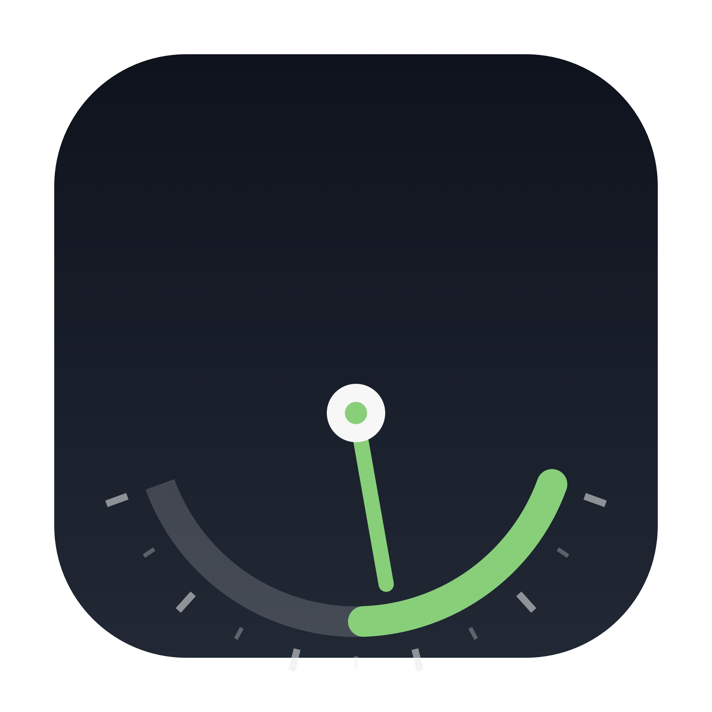
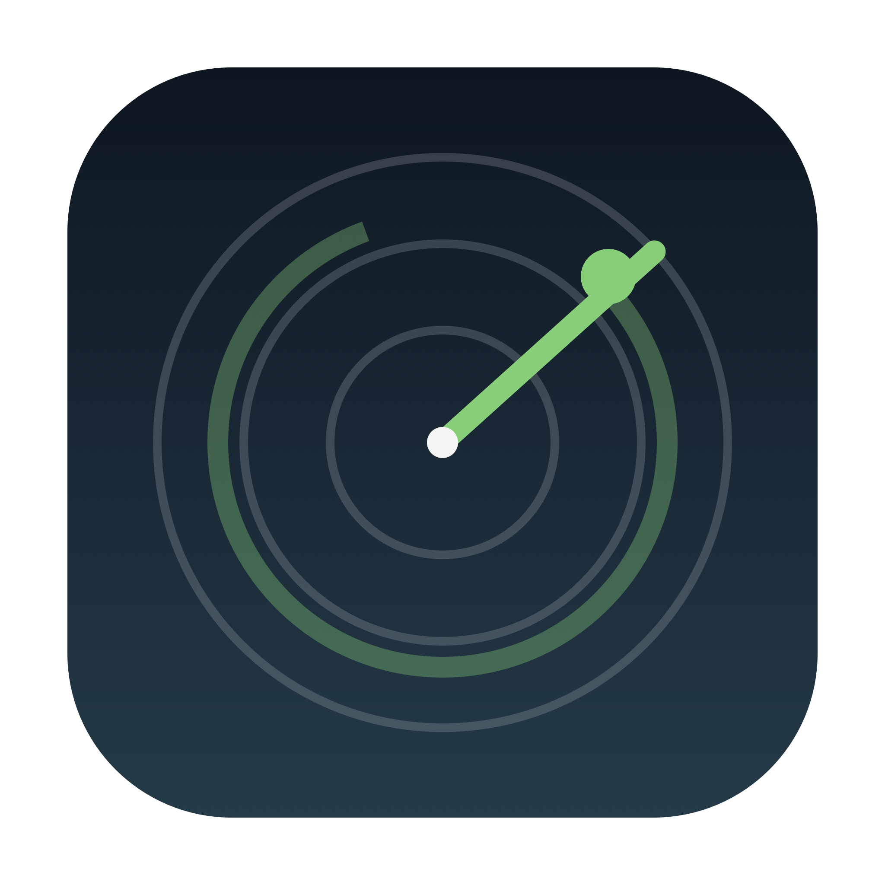

换一组：更像“监测工具”的图标
这次不再用抽象圆环，换成仪表、雷达、品牌字母三种方向。

G · 仪表盘
刻度 + 指针 + 绿色进度
最直观地表达“用量/额度监测”
最像监测工具

H · 雷达
同心圆 + 扫描线 + 信号点
强调实时流量、探测
实时感

I · D + 脉冲
品牌字母 D + 心跳线
品牌识别 + 监控含义
品牌感
如果只选一个：G 最不容易被误解成“状态灯”；H 更像网络流量；I 更像 DeepSeek 自家产品。
也可以混搭：G 的仪表盘 + 小绿点，或 I 的 D + 仪表弧线。